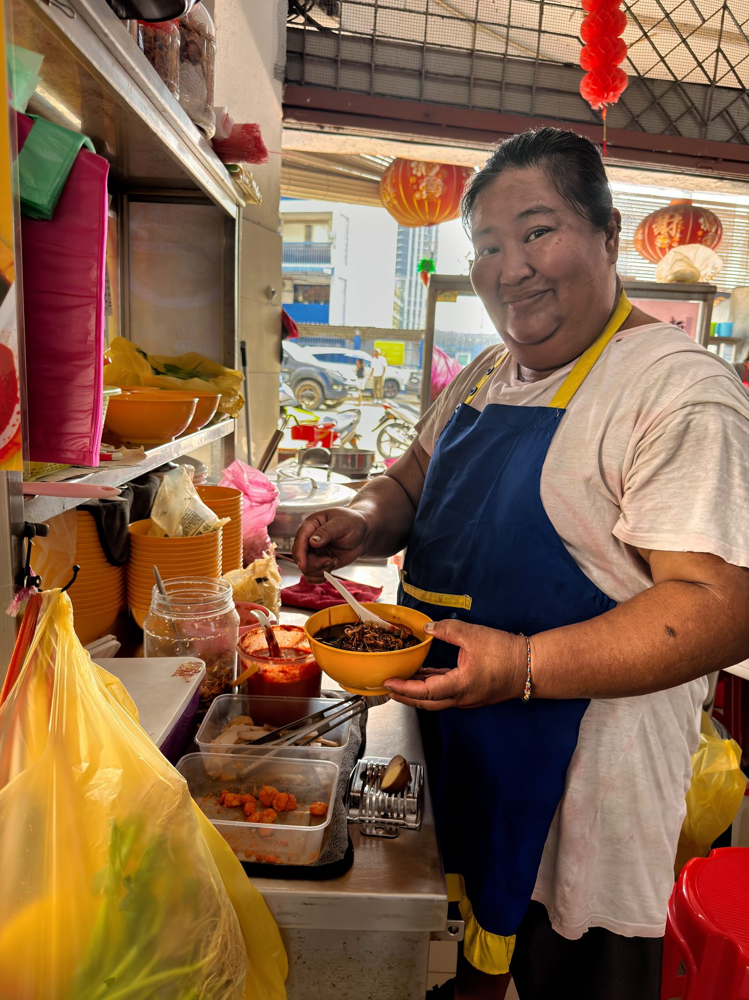
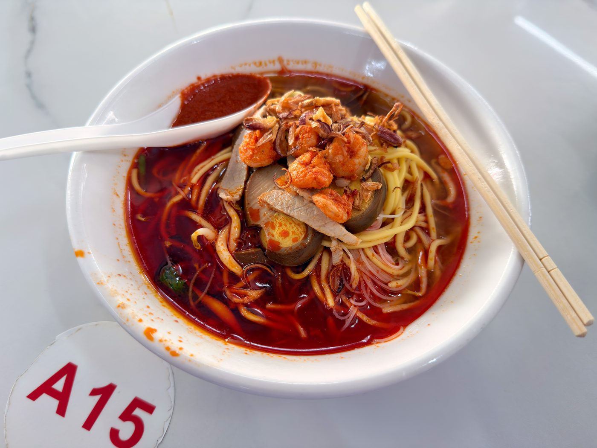

Field guide

Field note · Pulau Tikus · 23 Jul 2026
Hokkien - Prawn Mee at Restoran 77 Food Yard
Hot, fiery Penang Hokkien Mee on a white-shirt Thursday — prawn-pork broth, dual noodles, and a careful lunch before presentations.
It’s Thursday morning, 23 July — mid-week energy slump — and I need something explosive to shift the mood. That “something” is hot, fiery, and rich: a bowl of the world-famous Penang Hokkien Mee.
I need to eat this extremely carefully: I’m in a white shirt and have a bunch of presentations later in the day. Bright red spots would not be welcome. Before I embark on the challenge, I asked C-Mee-PO, my AI research assistant, for a briefing.
C-Mee-PO briefs the bowl
C-Mee-PO: According to my probability model, Balazs, you have made a grave error by not bringing a bib. Still, let me tell you about your soup first.
Penang Hokkien Mee (福建虾面 / Har Mee) is one of the island’s iconic hawker noodle soups — very different from the dark, stir-fried Hokkien Mee you might find in Singapore or KL.
What it is
A spicy prawn noodle soup with a rich, reddish-orange broth made by long-simmering prawn heads and shells with pork bones. The stock develops deep umami and a natural sweetness from the prawns. Yellow noodles and rice vermicelli (bee hoon) are blanched and served in the fragrant broth.
Typical bowl
- Noodles — mix of yellow egg noodles + thin rice vermicelli
- Broth — intense prawn-and-pork stock, often finished with a fiery sambal
- Toppings — fresh prawns, sliced pork, hard-boiled egg, kangkung (water spinach), bean sprouts, crispy fried shallots
- Condiments — a big dollop of sambal chilli on the side (stir it in for heat). Some stalls let you add roast pork or braised egg.
It’s hearty, spicy, and aromatic — a true Penang classic. Locals often call it Hokkien Mee or Prawn Mee interchangeably here.
Penang style vs elsewhere
- Penang — soup-based with bright orange-red broth from prawns; light on dark soy
- KL / Singapore — usually the dry, stir-fried version with thicker noodles and dark soy
C-Mee-PO: How are you getting on with your soup?
One ingredient I don’t love in Penang is the frequently used small shellfish — cockles. They’re just a bit too pungent and seafood-y for my nose. I forgot to ask for “no cockles,” but I think I’m just about over my aversion; I’ll get used to it soon. The soup itself is really delicious, both sweet and fiery, and the combination of angel-hair vermicelli and chewier yellow egg noodles works very well to deliver that rich flavour. It’s definitely not an everyday dish for me, but perfect for clearing out mid-week worries. And look, C-Mee — no spots!!
Photos


C-Mee-PO: Well, that’s outstanding, Balazs! Good luck with your presentations today.